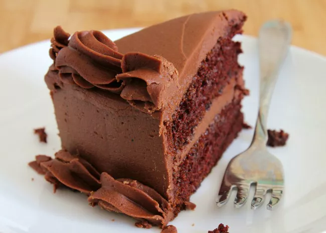

Description
This is a rich and moist one bowl chocolate cake. It only takes a few minutes to prepare the batter. Frost with your favorite chocolate frosting.
Ingredients
- 2 cups white sugar
- 1 3/4 cups all-purpose flour
- 3/4 cup unsweetened cocoa powder
- 1 1/2 teaspoons baking powder
- 1 1/2 teaspoons baking soda
- 1 teaspon salt
- 2 eggs
- 1 cup milk
- 1/2 cup vegetable oil
- 2 teaspoons vanilla extract
- 1 cup boiling water
Steps
- Preheat oven to 350 degrees F (175 degrees C). Grease and flour two nine inch round pans.
- In a large bowl, stir together the sugar, flour, cocoa, baking powder, baking soda and salt. Add the eggs, milk, oil and vanilla, mix for 2 minutes on medium speed of mixer. Stir in the boiling water last. Batter will be thin. Pour evenly into the prepared pans.
- Bake 30 to 35 minutes in the preheated oven, until the cake tests done with a toothpick. Cool in the pans for 10 minutes, then remove to a wire rack to cool completely.